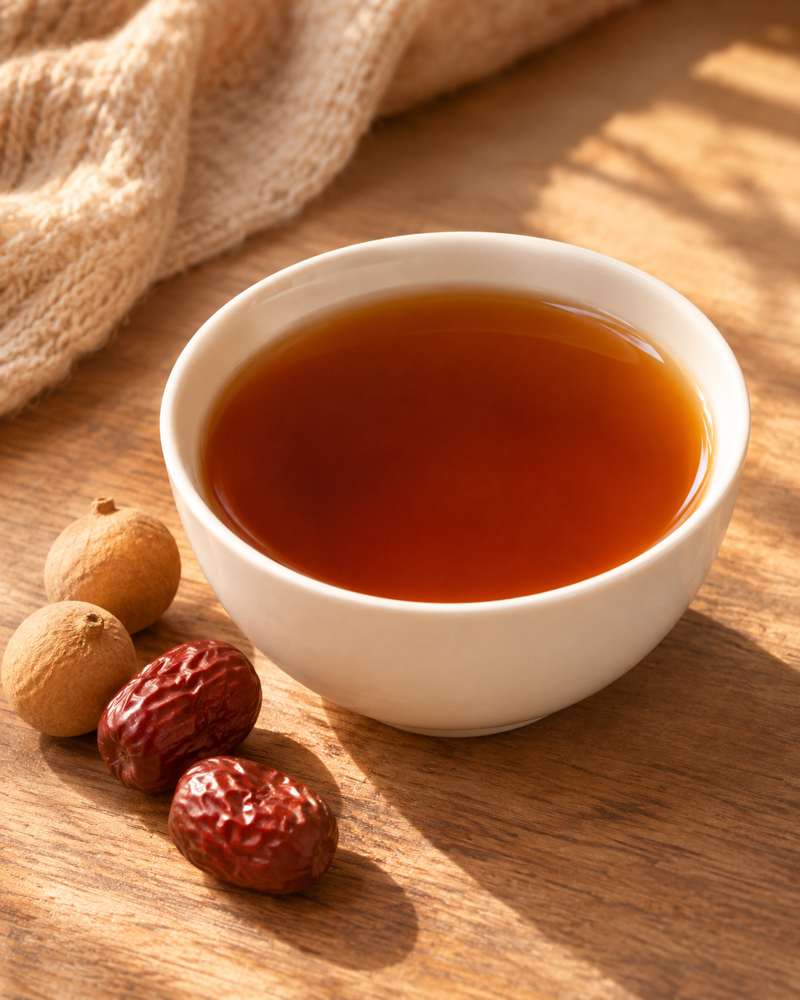
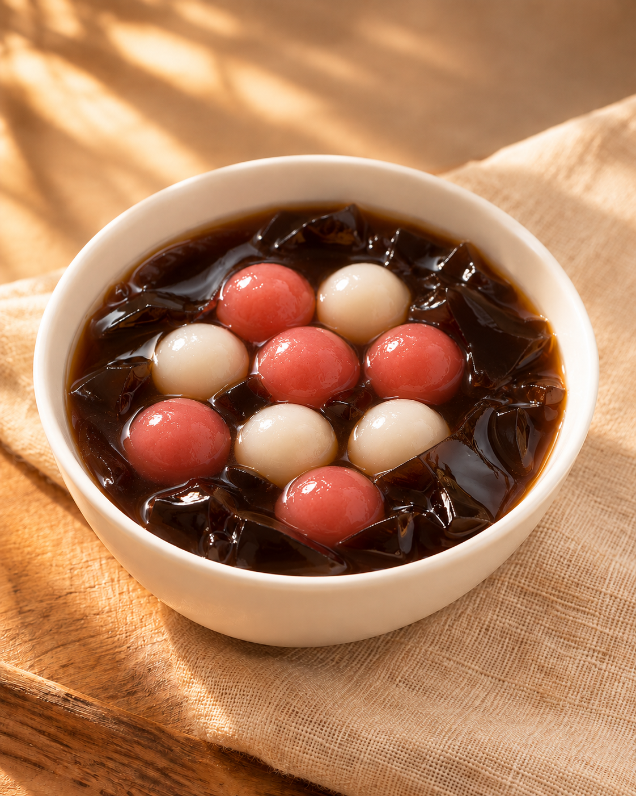
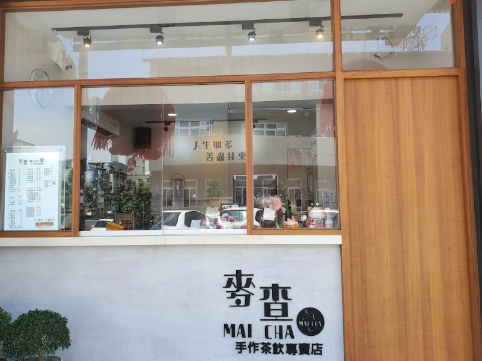

麥寮冬季飲品推薦｜麥查季節限定品項 12 月開賣
東北季風吹起，麥寮的天氣一轉涼，下午茶或宵夜時段總想來點熱呼呼的飲品或甜湯暖胃。在地手搖品牌「麥查 MAI CHA」推出冬季限定系列，預計於 12 月正式開賣，一次帶來 桂圓紅棗茶、薑汁奶茶、湯圓燒仙草、紅豆湯圓 四款暖心品項，無論你想在辦公室喝杯溫潤熱茶，還是想來碗料多飽足的紅白湯圓甜湯，都能在麥查一次滿足。
麥寮冬季飲品推薦：麥查 4 款季節限定口感與介紹
麥查冬季限定菜單兼顧「暖身熱飲」與「咀嚼系甜湯」兩大需求，四款品項皆為現點現做，供應情形以麥查官方公告為準：
1. 桂圓紅棗茶
50 元
天氣剛轉涼時，最適合來一杯溫潤順口的桂圓紅棗茶。嚴選飽滿桂圓肉與紅棗慢火熬出清澈琥珀茶湯，入口先是桂圓特有的焦糖蜜香在舌尖化開，緊接著紅棗的溫厚果香緩緩釋放，喝起來清甜不膩口，尾韻帶著淡淡自然回甘。無咖啡因的溫和配方，無論是午後提神，還是下班回家想為自己留一段暖暖的休息時間都非常適合。
2. 薑汁奶茶
55 元
想喝奶茶的濃郁滑順，又想在冷天裡驅走手腳冰冷？這杯薑汁奶茶完美平衡了「醇」與「暖」。第一口先感受到基底奶茶的圓潤厚實，緊接著薑汁的微微辛香在喉間溫柔散開，不嗆辣卻很有存在感，讓整杯熱奶茶喝起來層次豐富、絲毫不膩口。在麥寮海風吹拂的日子裡，點一杯熱騰騰的薑汁奶茶，讓雙手與胃袋一起暖起來。
3. 湯圓燒仙草
50 元
一碗就能同時享受「滑順茶湯」與「軟糯咀嚼」的雙重快樂！溫熱的燒仙草湯底帶著濃郁草本甘香，入口滑溜順喉；搭配一顆顆圓潤飽滿的紅白小湯圓，咬下去軟糯 Q 彈、越嚼越有純粹米香。每一湯匙都能舀到滑嫩仙草與彈牙湯圓的交織口感，飽足感十足，是冬至應景或下午嘴饞時的療癒首選。
4. 紅豆湯圓
50 元
冬季甜湯的經典不敗款！慢火熬煮至綿密鬆軟的紅豆，顆粒飽滿卻入口即化，湯頭濃郁香甜卻不過度厚重；搭配現煮軟糯、帶有微 Q 嚼勁的紅白小湯圓，綿密豆香與米香在口中完美融合。冷天裡不想自己開火煮甜湯，來上一碗暖呼呼的紅豆湯圓，瞬間治癒所有忙碌與疲憊。
麥查冬季限定飲品價格與選購指南
| 冬季限定品項 | 售價 | 口感特色 | 推薦享用時機 |
|---|---|---|---|
| 桂圓紅棗茶 | 50 元 | 溫潤清甜、自然果香回甘 | 晚上怕睡不著、想喝無咖啡因熱飲 |
| 薑汁奶茶 | 55 元 | 奶香醇厚、尾韻微辛暖身 | 手腳冰冷、冷風天下午茶提神 |
| 湯圓燒仙草 | 50 元 | 仙草滑順、紅白湯圓 Q 彈 | 下午嘴饞想吃料、冬至應景甜湯 |
| 紅豆湯圓 | 50 元 | 紅豆綿密飽滿、湯圓軟糯 | 飯後甜點、需要飽足感的宵夜時光 |
麥查冬季飲品怎麼購買或預訂？六輕與村莊外送資訊

麥查冬季飲品預計 12 月開賣，因冬季熱飲與湯圓皆為現點現做，建議先透過官網線上預訂，省去現場吹風等候的時間：
- 門市現場購買：歡迎直接至麥查門市點餐，現點現煮需稍候片刻。
- 六輕廠區外送：單筆滿 10 碗（杯）以上（約 500 元），可安排於 中午 11:00 左右進廠外送，適合廠區部門午餐團購、飯後甜點。
- 麥寮附近村莊外送：包含 橋頭、施厝、新吉、雷厝、三盛 等地區，單筆滿 300 元 即可安排外送。
- 預訂時間提醒：無論是六輕進廠或周邊村莊外送，請務必 至少提前 1 小時預訂，方便門市提前熬煮備料。
麥寮冬季熱飲與外送常見問題（FAQ）
Q1：六輕中午團購最晚幾點前要預訂？
由於冬季甜湯與熱飲皆為現煮製作，若希望安排中午 11:00 左右進廠外送，建議最晚於 早上 10:00 前（至少提前 1 小時）透過麥查官網或電話完成預訂。
Q2：甜度可以調整嗎？
可以！在官網線上點餐時，可於備註欄填寫偏好的甜度需求（如微糖、半糖），門市會依實際配方為您微調。
Q3：除了冬季限定款，外送可以一起搭配麥查的招牌純茶或鮮奶茶嗎？
可以的！外送滿額門檻（六輕滿 10 杯／周邊村莊滿 300 元）皆可與官網菜單上的其他飲品自由混搭湊單，一次滿足同事或家人的不同口味。